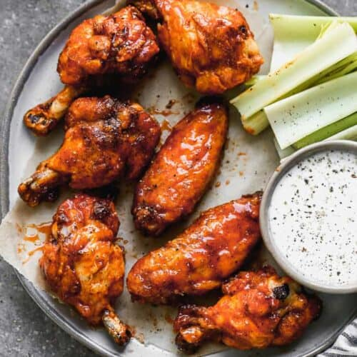

Smoked Chicken Wings Recipe

Description
This is a great appitizer to share with friends when you're watching the game.
Ingredients:
- A couple pounds of chicken wings
- Your favorite seasoning or sauce - we like montreal chicken spice
Steps:
- Set the smoker to 375F.
- Place the chicken wings on the smoker for 45 minutes.
- Check the wings every 10-15 minutes.
- Serve with some celery, carrots, and your favorite sauce.